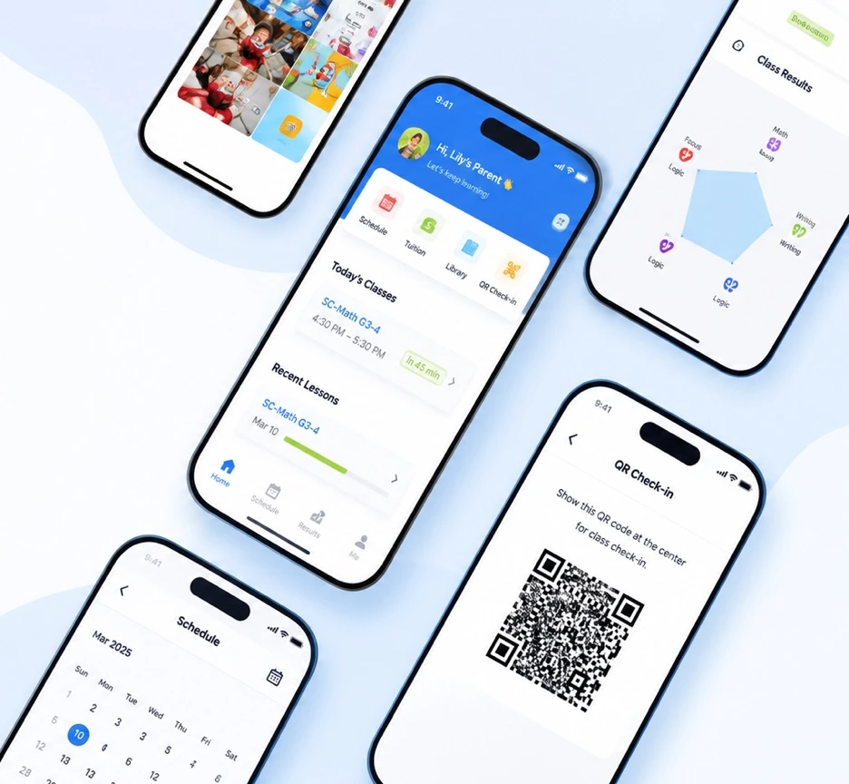
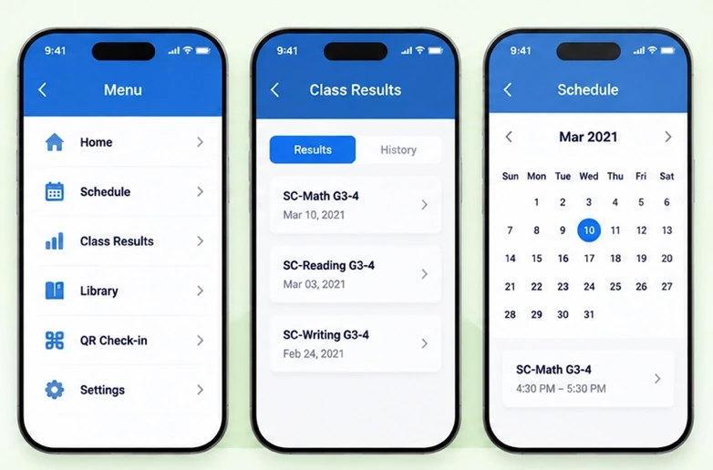
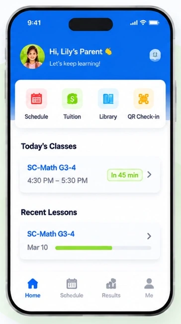
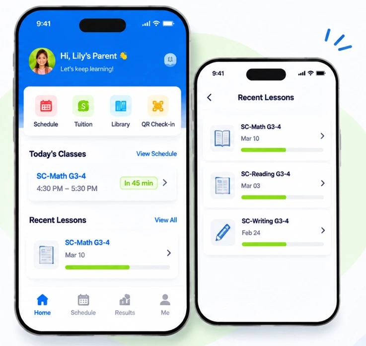
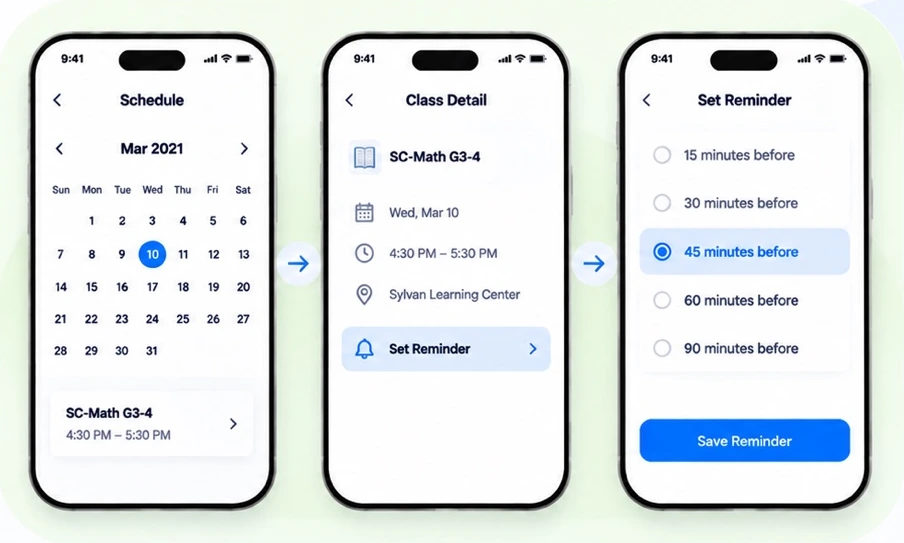
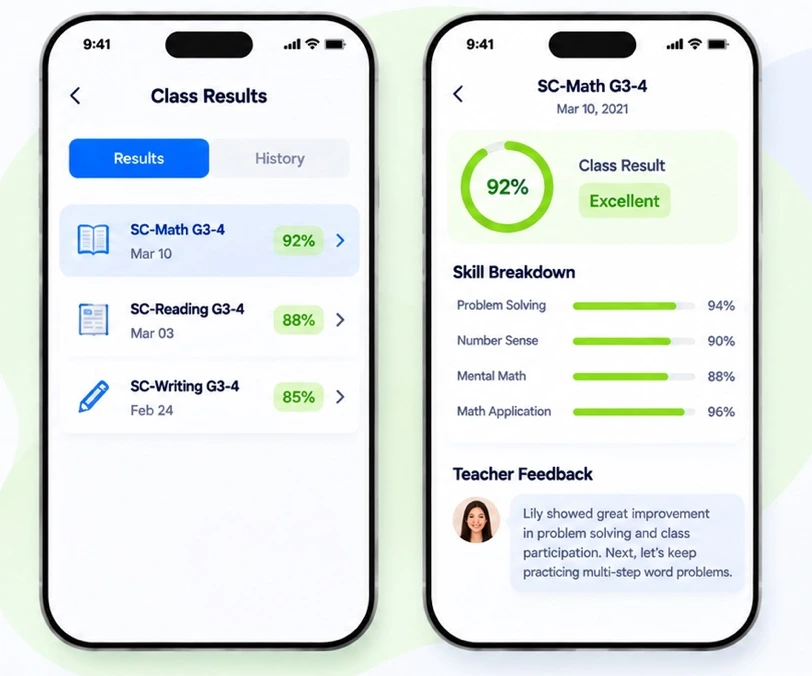

01
Find the next class
Busy parents needed to check schedules quickly and remember upcoming lessons.
Product design case study
A mobile redesign for parents following their child’s learning.
Phu Vo Hoang / 2021

Class details and teacher feedback were hard to find in the app. Families also relied on messages, email and paper handouts to stay informed.
Product goal
I observed families at two Sylvan centers and interviewed parents and caregivers.
Busy parents needed to check schedules quickly and remember upcoming lessons.
Parents searched old messages and photos for teacher feedback and lesson history.
Some grandparents struggled with small text, unfamiliar icons and multiple apps.
I audited the existing app against the tasks families were already trying to do.
What I found

I moved the most useful information to Home and grouped detail screens by task.
Surface today’s classes and recent lessons on Home.
Give Schedule, Tuition, Library and QR check-in direct entry points.
Keep the full calendar, lesson history and results in their own views.

What changed
Today’s classes and recent lessons sit on the first screen.
Schedule, Tuition, Library and QR check-in stay visible.

Design decision
Parents can open Schedule from Home in one tap and choose when to receive a push alert before class.

Design decision
A skill breakdown shows where a child is doing well.
Clear, actionable feedback explains what to work on next.

Moderated 1:1 sessions, in person and remote, with parents and caregivers.
What I tested
What I observed
These sessions surfaced usability issues in the prototype.
I’d continue testing and measuring the impact of the redesign in real use.
Test larger text, higher contrast and clearer labels with more caregivers, including grandparents.
Goal A more inclusive and easier experience for all users.
Compare task completion time and success rate with the previous app.
Metric Higher task success rate and less time to find key information.
Track usage and feedback to identify new opportunities for improvement.
Focus Ongoing, data-driven iterations after release.